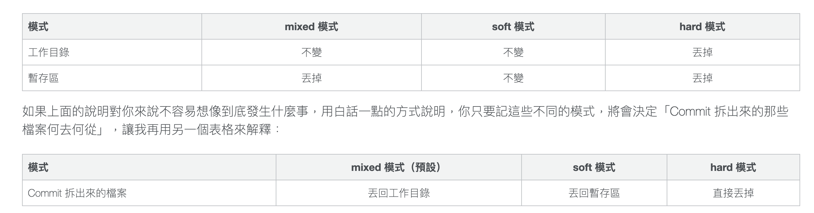

分支
git branch查看本地所有分支git branch -a查看所有分支 (包含遠端)
git branch <branch>開新分支git checkout <branch>切換分支git branch -d <branch>刪除分支git branch -D <branch>強制刪除分支
為了避免誤刪分支，若此分支尚未
merge到任一分支，此時使用git branch -d <branch>會出現以下錯誤error: The branch ‘for-practice' is not fully merged.，這時必須使用git branch -D <branch>來強制刪除分支
git checkout -b <branch>開新分支以及切換分支【git checkout -b feature】 = 【git branch feature】 + 【git checkout feature】
git checkout origin/new_brnach -b new_branch建立 local new_branch 並與遠端連接git branch <new-branch-name> <commit ID>回到某個 commit，並開一個新分支
刪除分支
刪除分支並不會刪掉 commit ，只是會被隱藏起來
git reflog 顯示所有 log (包含隱藏的 log)
合併分支
git merge <branch> : 站在這裡將其他 branch 拉進來
合併後會自動多一個合併訊息
快轉(Fast-Forward)合併
從 master 分出分支 practice，在 practice 提交了兩個版本 C3``C4，
而 master 在分出 practice後一直沒有提交新的版本，這時合併就
- 不會有 merge commit message
- 也不像之前合併一樣會有一個耳朵長出來合進去
1 | Git checkout master |
如果想要看到耳朵
git merge —no-ff <branch>
合併回復
git reset —-hard ORIG_HEAD 表示回到上一版
git reset —-hard [commit ID] 表示回復到某個特定 commit
git reset 的三種模式
—-hard:
在這個模式下，不管是工作目錄以及暫存區的檔案都會丟掉。
—-mixed
—mixed 是預設的參數，如果沒有特別加參數，git reset 指令將會使用 –mixed 模式。這個模式會把暫存區的檔案丟掉(unstage)，但不會動到工作目錄的檔案，也就是說 Commit 拆出來的檔案會留在工作目錄，但不會留在暫存區。
—-soft:
這個模式下的 reset，工作目錄跟暫存區的檔案都不會被丟掉，所以看起來就只有 HEAD 的移動而已。也因此，Commit 拆出來的檔案會直接放在暫存區。

- Post title：【Git】Git Branch
- Post author：Neil Yang
- Create time：2020-07-03 00:00:00
- Post link：https://des86532.github.io/2020/07/03/Git/git-branch/
- Copyright Notice：All articles in this blog are licensed under BY-NC-SA unless stating additionally.